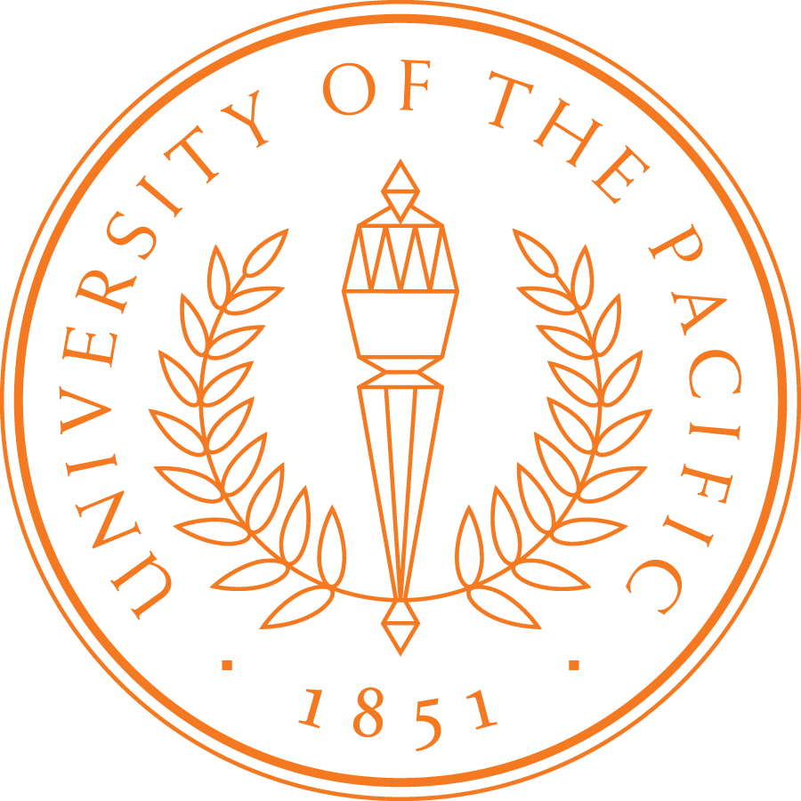

|
Coptic Scriptorium |
|
  |
Support for Coptic SCRIPTORIUM has been provided by:
- The National Endowment for the Humanities Office of Digital Humanities and Division of Preservation and Access,
- The Department of Linguistics, Georgetown University
- The Institute for German Language and Linguistics, Humboldt University
- Grants from the Pacific Fund, Faculty Research Committee, College Research Fund, and Department of Religious and Classical Studies at the University of the Pacific
The Coptic SCRIPTORIUM research team includes:
- Caroline T. Schroeder, the University of the Pacific
- Amir Zeldes, Georgetown University
- Rebecca S. Krawiec, Canisius College, editor and encoder/annotator, translator (2013-)
- Christine Luckritz Marquis, editor and encoder/annotator, translator (2014-)
- Elizabeth Platte, Kalamazoo College, editor and encoder/annotator (2013-)
- Janet Timbie, the Catholic University of America, editor and annotator (2013)
- Eliese-Sophia Lincke, Humboldt University (2014-)
- So Miyagawa, Kyoto University (2014-)
- Bridget Almas, Perseus Digital Library (consultant for SCRIPTORIUM) (2014-)
- Edwin Ko, Georgetown University, annotation interface development (2014-)
- Yanrui Liu, M.A., University of the Pacific, repository and website managment (2014-)
Advisory Board:
- Alain Delattre, Assistant Professor, Department of Languages and Literatures, Université libre de Bruxelles; Papryi.info.
- Eitan Grossman, Assistant Professor, Department of Linguistics and the School of Language Sciences, Hebrew University.
- Robin Imhof, Humanities Librarian and Associate Professor, University Library, the University of the Pacific.
C. Schroeder and A. Zeldes gratefully acknowledge the following individuals and organizations for their contributions to the project:
- The Corpus dei Manoscritti Copti Letterari (Coptic lexicon and other materials)
- Stephen Emmel, University of Münster
- Eric E. Johnson
- Tito Orlandi, Ph.D., Sapienza University, Rome; the University of Hamburg
- The ANNIS team at Humboldt University for providing so many customizations
Partner Projects:
Former members of our team:
- Lauren McDermott, the University of the Pacific student; TEI encoder and HTML programmer (2013-14)
- Alex Dickerson, the University of the Pacific, student; TEI encoder and programmer (2013)
A project bibliography is available at Zotero
 You can also fork us on GitHub.
You can also fork us on GitHub.
The image on this page is a detail of MS M.0581, fol. 010r at the Pierpont Morgan Library, available at http://corsair.morganlibrary.org/icaimages/5/m581.010ra.jpg, for non-commercial use only.
The project is supported by the National Endowment for the Humanities Office of Digital Humanities and Division of Preservation and Access, the University of the Pacific, and Georgetown University.
Page last updated 18 December 2014